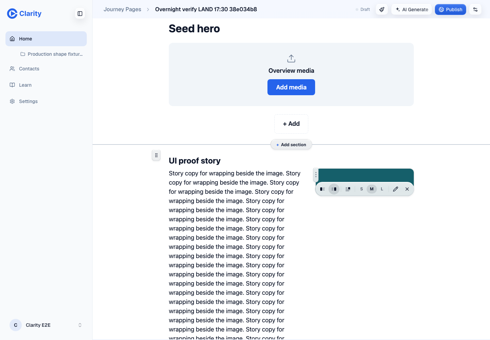
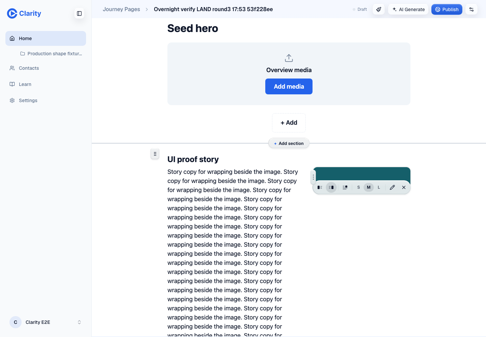
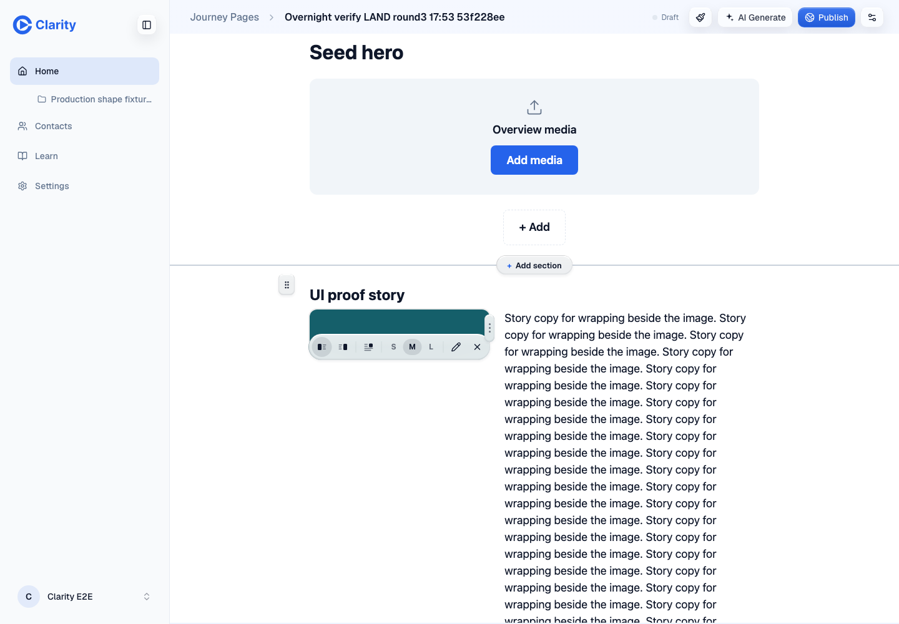
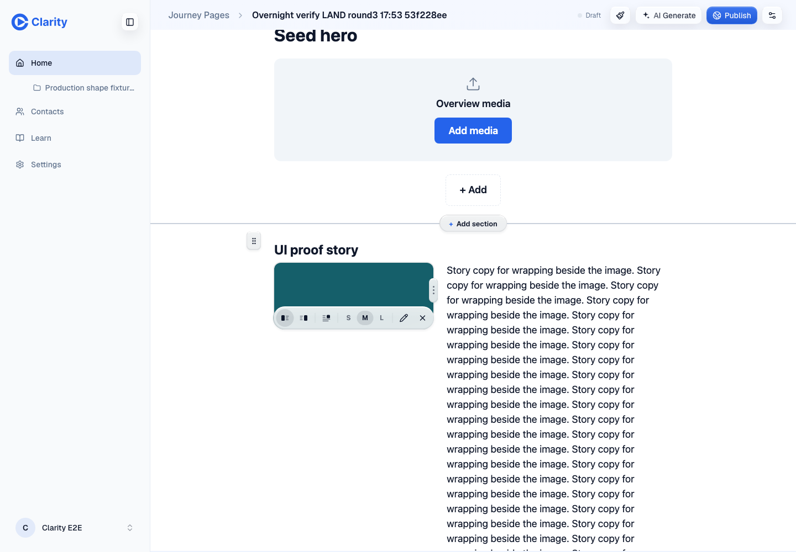
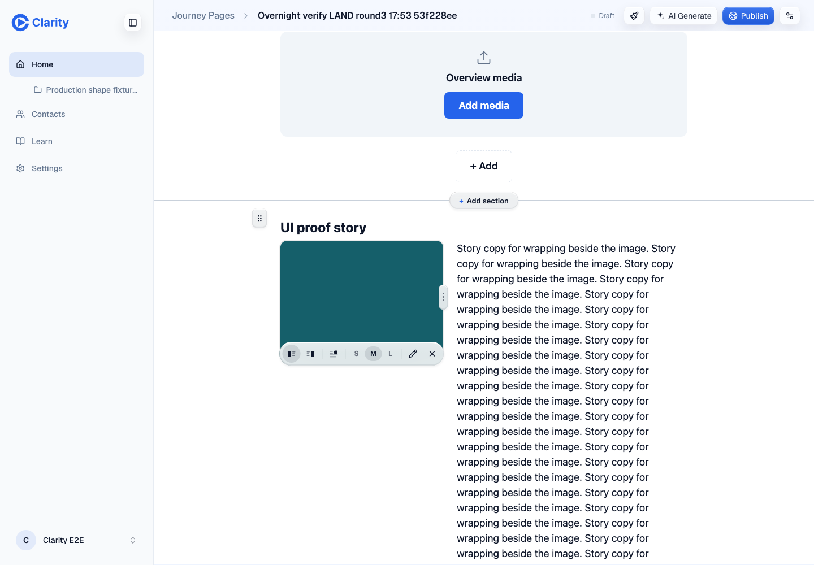
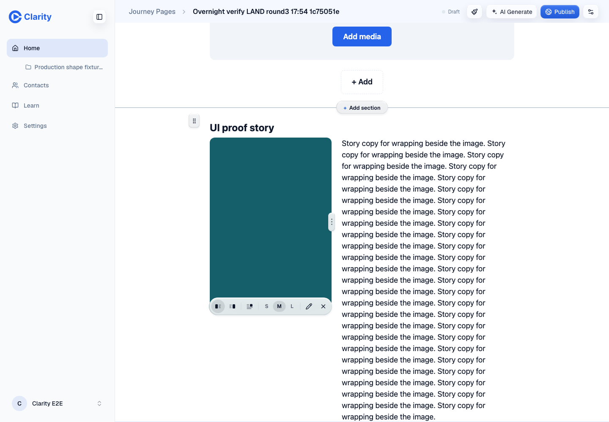
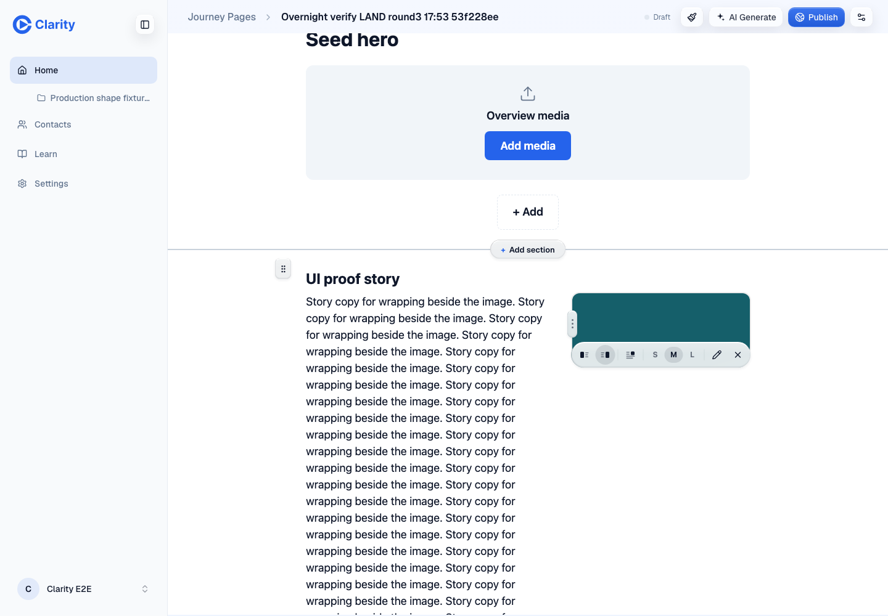
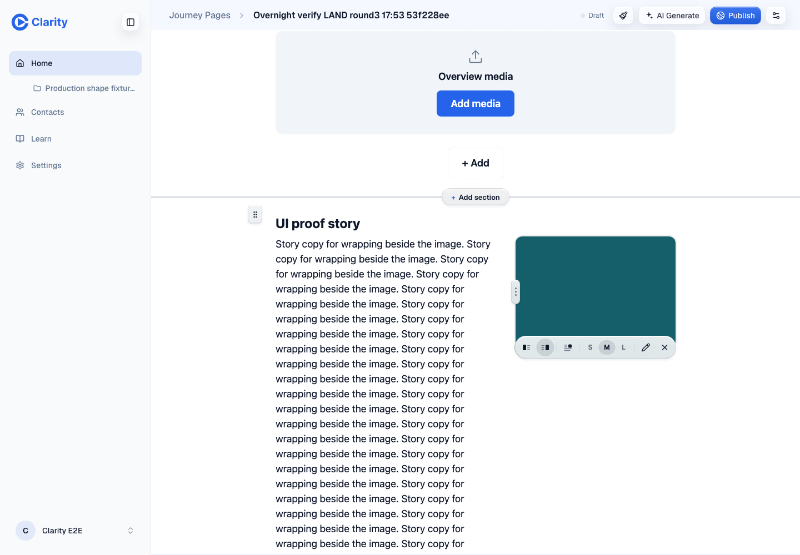
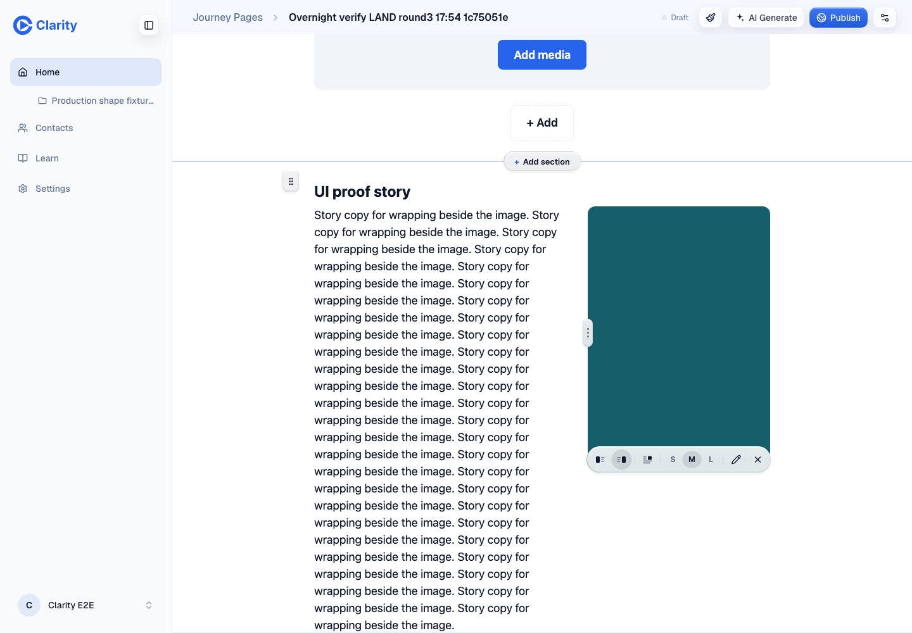

Independent browser run. Parent owns gates and full diff review.
| Check | Result | Evidence |
|---|---|---|
| Preview identity | PASS | doctor.txt Authenticated doctor matched the requested head after waiting 21 seconds. |
| Change since round 2 | PASS | round3-diff.txt Only JourneyMediaResizer.tsx changed: grip translation and its explanatory comment. |
| Visible grip midpoint | PASS | geometry-summary.json Both sides at 60, 100, 200 and 400px. Every midpoint offset is 0px; measured grip opacity is 1. |
| Toolbar and handle hit tests | PASS | geometry-visible/settled-height-sweep.json 576 toolbar point probes pass, nine per button. All eight handle centers are reachable. |
| Short-image pointer Left/Right | PASS | results.json Four coordinate clicks, Left/Right twice, on an uploaded 640 by 100 image at a 1440 by 1000 viewport. Every edit saves, reloads and matches API mediaSide and rendered state. |
| Short-image keyboard Left/Right | PASS | results.json Four Enter activations, Left/Right twice. Focus and pressed state asserted. Every edit saves, reloads and matches API mediaSide. |
| Pointer resize persistence | PASS | pointer-drag-resize-save-reload.json Real drag from 40% to 55%. Browser PUT succeeds, API stores mediaSize 55, and reloaded column width is 55%. |
| Hero title | PASS | adjacent-hero-title.json Inline edit survives reload and matches API and rendered text. |
| Story body | PASS | adjacent-story-body.json Inline edit survives reload and matches API and rendered text. |
| CTA add and remove | PASS | results.json Both changes survive reload and match primaryCta in adjacent-cta-add.json and adjacent-cta-remove.json. |
| Canvas add and section drag | PASS | results.json Seam adds a second story; removal returns to one. Pointer drag places summary before pricing. API order survives reload. Keyboard and menu reorder also pass. |
| Console and network | PASS WITH NOTE | console-network-summary.json No console or page errors. All browser PUT responses are 200. One folder-list request aborted; completed calls returned 200. No failed save. |
| Owned fixture cleanup | PASS | cleanup.json All three created pages and all three uploaded image assets were deleted and subsequently returned 404. |
| Gates and full diff audit | NOT RUN HERE | browser-verdict.md Assigned to the parent. This verdict covers the bounded browser checks only. |









The geometry sweep changes only the image DOM height to reach exact 60, 100, 200 and 400px states. The 400px case is the normal-height representative. These temporary heights are not saved; alignment and resize persistence use the actual uploaded short image. This run uses desktop Chromium at 1440 by 1000. Keyboard replay focuses each named button and presses Enter; it does not assert full Tab traversal. The section-drag screenshot returns to the top after reload, so the stored block order in section-pointer-drag.json is the decisive persistence evidence. The initial 400px left screenshot did not show the grip consistently despite an opacity measurement of 1. normal-visible repeats both 400px cases with the pointer at the image edge and asserts opacity before and after capture. Both final screenshots visibly show centered grips. Earlier unchanged round-2 coverage was read but is not claimed as freshly rerun. Gates and full-diff review remain with the parent.
One aborted folder-list request is retained in errors.json. There were no console errors, page errors, or failed save responses. All six created fixtures return 404.